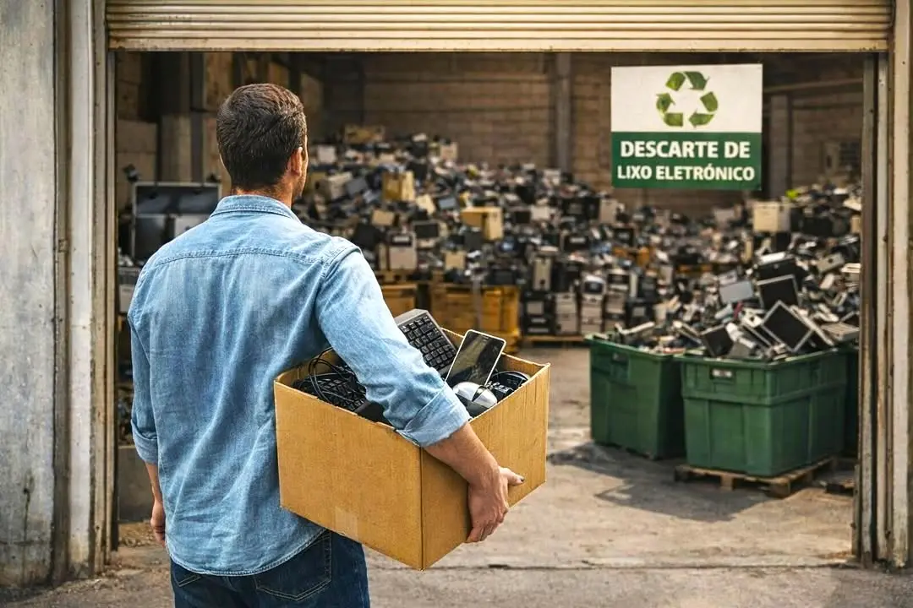
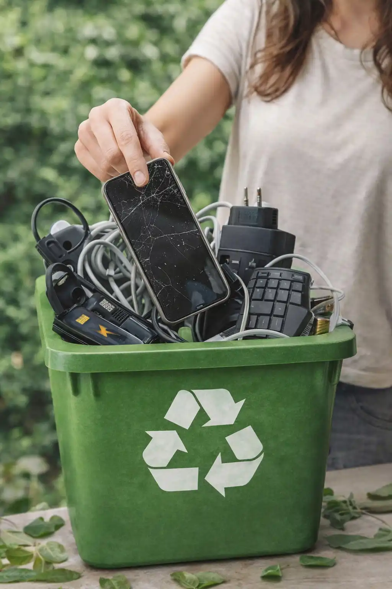
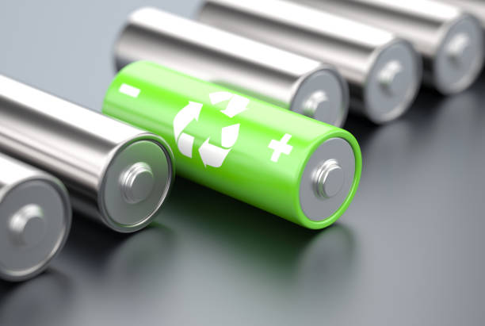

AGORA É COM VOCÊ
Chegou a hora de encontrar o local certo para um descarte seguro e consciente.


O Ponto Verde facilita esse processo, conectando você aos locais corretos.

Não deixe que seus antigos aparelhos se tornem um problema silencioso. Seja o protagonista da mudança que você quer ver e faça do descarte consciente um hábito de quem valoriza a vida tanto quanto a inovação.
A responsabilidade ambiental não termina quando um dispositivo eletrônico deixa de funcionar ou é substituído por um modelo mais recente. A questão subsequente é: “Como posso descartar esse item de forma responsável?”.
De acordo com a Política Nacional de Resíduos Sólidos (Lei nº 12.305/2010) do Brasil, a forma correta de descartar o lixo eletrônico é por meio da logística reversa e da destinação adequada. A logística reversa é o sistema que estabelece a responsabilidade compartilhada entre fabricantes, importadores, distribuidores e consumidores na gestão dos resíduos gerados pelos produtos eletrônicos.
Para garantir o descarte correto, siga estas orientações:
A primeira coisa a ser feita é a separação do lixo eletrônico dos demais tipos de lixo, como o orgânico. Coloque-os em uma caixa de papelão resistente, deixando tudo o mais organizado possível.
Antes de descartar qualquer dispositivo eletrônico que armazene informações, é crucial garantir que todos os dados pessoais sejam apagados. Isso inclui contatos, fotos, mensagens e quaisquer outros arquivos sensíveis.

Retire pilhas e baterias para que sejam despejadas também como lixo eletrônico, mas separadamente. A única exceção ocorre no caso das baterias de lítio, como as presentes nos celulares, que devem permanecer dentro do produto.
Por motivos de segurança, o desmonte não deve ser realizado em casa em hipótese alguma. Descarte as peças inteiras, limpas e desligadas. O desmonte desses aparelhos sempre deve ser realizado por profissionais capacitados e com equipamentos de proteção devidos.
Chegou a hora de encontrar o local certo para um descarte seguro e consciente.

O Ponto Verde facilita esse processo, conectando você aos locais corretos.